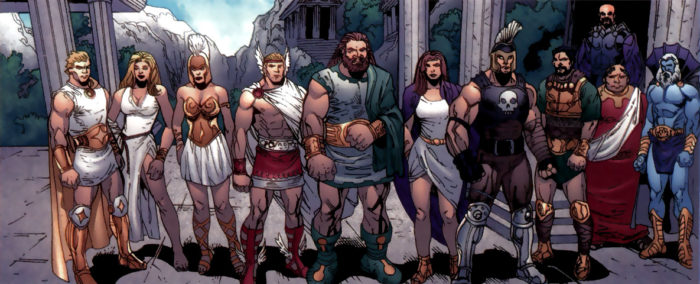
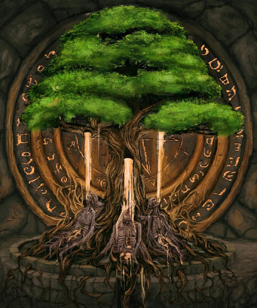
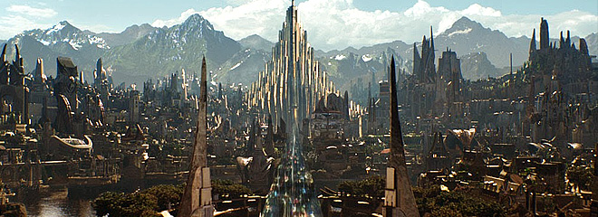
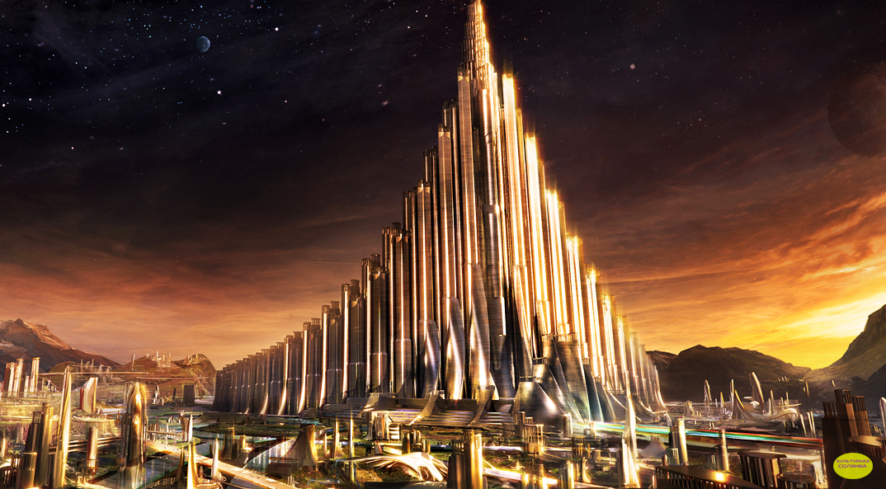

Боги Асгарда
В германо-скандинавской мифологии старшим богом считался Один. Кроме Одина, было двенадцать богов: Тор, Бальдр, Тюр, Хеймдалль, Браги, Хёд, Видар, Вали, Улль, Ньёрд, Фрейр, Локи.
Асы — существа порядка, ведя войну с ванами — существами природы, построили укреплённый Асгард. Позже асы сдружились с ванами, обменялись представителями (а на самом деле — заложниками, так в мир асов пришёл ван Ньёрд, иначе — Ниодр, Ниорд и т. д., и поселился с ними в Асгарде) и с тех пор живут в мире друг с другом. Кроме богов и богинь, в Асгарде (в чертоге Вальгаллы) живут девы-воительницы — валькирии. Другая группа богов, ваны, живут в Ванахейме. Один из трёх корней Древа Мира — Иггдрасиля — тянется в сторону Асгарда.
В Младшей Эдде рассказывается, что Асгард был построен каменщиком-гримтурсеном (гримтурсены — так исландцы называли великанов, используя и другое слово — ётуны) с помощью его коня Свадильфари, и за это асы должны были отдать гримтурсену Солнце, Луну и богиню Фрейю. Но бог Локи, превратившись в кобылу, отвлёк коня Свадильфари от работы, и, поскольку работа не была выполнена в срок, боги избежали расплаты. А великан был убит Тором, когда в гневе стал метать в асов строительные камни.

Все боги Асы жили в одном месте, но у каждого был свой чертог. У верховного бога Одина — Валяскьяльв, дворец с серебряной кровлей. Неподалёку, в Вальхалле, живут павшие на поле битвы воины — эйнхерии и валькирии. У стража богов Хеймдалля свой чертог — Химинбьерг, у бога грома Тора — Трудхейм.
Асгард — один из трёх космогонических миров германо-скандинавской мифологии, созданных триадой богов-демиургов: братьями Одином, Вили и Ве. Асгард — это мир богов-асов, небо и будущее; Мидгард — это мир людей, земля и настоящее; Хельхейм — это подземье, мир умерших предков и прошлое. За пределами созданного тремя богами космоса лежит Утгард, «внешнее отгороженное пространство», трансцендентный мир демонической магии, неподвластный законам асов, иногда отождествляемый с Ётунхеймом, королевством великанов.
